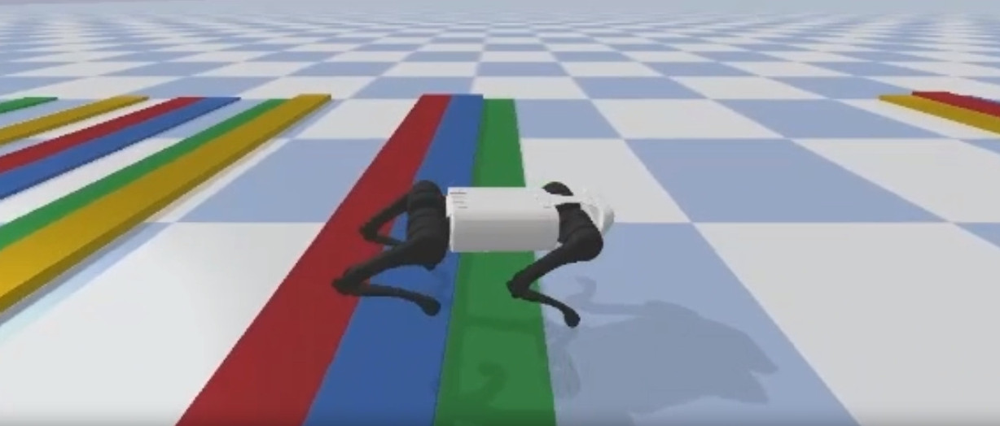

This project aims to develop a deep reinforcement learning framework for quadruped locomotion with central pattern generators (CPGs), a biologically-inspired controller. Generally, CPGs located in the spinal cord are used to generate rhythmic patterns for animals and are considered a key component for agile locomotion control. It has widelyj been used in the locomotion of robotics. However, parameter tuning remains challenging, typically done by hand or optimization methods such as genetic algorithms. On the other hand, deep reinforcement learning has been widely used in robotics to learn powerful feedback control. However, it requires hand-crafted reward design to guide the learning process and acquire the desired behavior. Therefore, we would like to combine the advantages of both CPGs and deep reinforcement learning to develop a framework that can learn the locomotion control policy for quadruped robots more efficiently. In this work, we follow the idea of the previous work, CPG-RL, and propose a sensory-feedback based CPG-RL framework, inspired by the tegotae-based approach. Our framework explicitly learns the weight of force feedback based on the robot's proprioception and shows robust locomotion performance on the rough terrains in the simulation evaluation environment.
